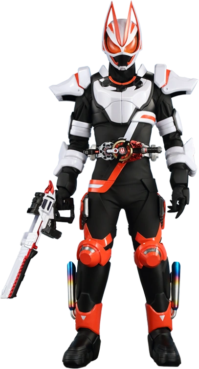

Kamen Rider Geats
"Và cuối cùng, ngôi sao tỏa sáng chính là ta."
Sơ lược nhân vật
Ukiyo Ace là một người chơi bí ẩn và cực kỳ tài năng trong Desire Grand Prix (DGP). Anh đã chiến thắng nhiều lần và đang tìm kiếm sự thật về mẹ mình thông qua trò chơi này.
Thông tin chính
- Nhân vật chính: Ukiyo Ace
- Chủ đề: Trò chơi sinh tồn, Cáo, Ước nguyện
- Thiết bị: Desire Driver